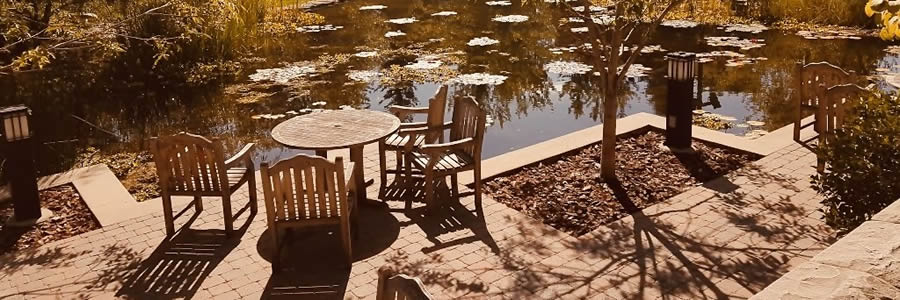

History
University of Saskatchewan
The pandemic year made applying to shcools a bit tricky with so many research groups forced to slow down work. U of S also wasn't my first choice. In fact, it wasn't even my second choice. But when my supervisor explained his research, I felt it was brimming with potential and opportunities.

University of Western Ontario
I joined a research group at Western for graduate studies without really knowing how grad school worked. At first, my plan was to work as hard as I could and finish my degree as soon as possible. For several reasons, that did not work out and I was stuck there for two and a half years. Luckily, I was met with an enjoyable group of fellow grad students and by the end, I was actually sad leave.